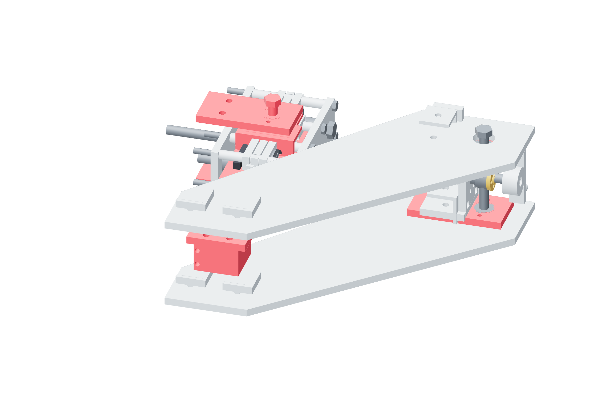

Gimbal / actuators84 / 179
Pin the three screw actuators
Each screw swings on metal clevises as its 150 mm lever rotates. The neutral pin-to-pin length is 180 mm for yaw, pitch and roll.
AddThree prepared 300 mm screw drives · three angular-lever · twelve clevis-cheek · three qualified lever hubs · 12 M5 × 45 hub bolts · 12 M8 × 50 partly threaded grade8.8 pivot stubs / metal spacers
Tools / setupCaliper · datum square · 4 mm hex · pin wrenches

- At the supported central pose, install each matched lever hub and 150 mm arm.
- Join the fixed and moving metal clevis cheeks with their pivot bolts. Keep the pivot freely rotating after the locking nuts are secured.
- Set pin-to-pin drive length to 180 mm using fixed datum faces and a rule/caliper transfer setup.
- Hand-turn each supported angular screw through its local range: U/W ±20°, V −20…+10°. Check clevis swing and the retained load path.
Ready when
Each clevis rotates without spreading its cheeks and positive screw extension moves its named angle positively. A binding clevis or incorrect neutral length changes the angular law. Correct the joint and repeat the supported hand sweep before referencing it.